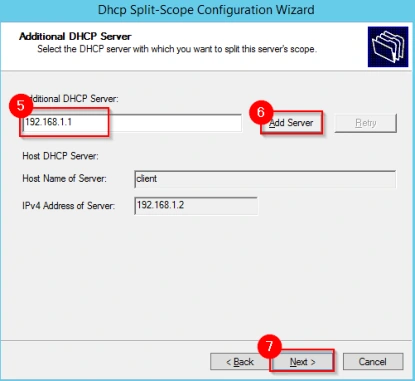
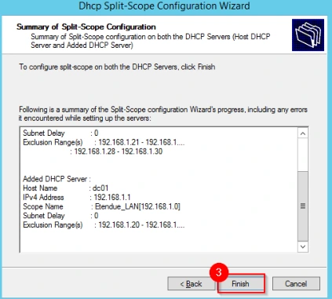
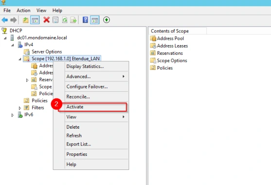

Le support est transcrit et structuré pour la lecture. Les valeurs secrètes et les noms propres au centre de formation sont neutralisés dans les exemples concernés.
Cette démonstration décrit les différentes étapes relatives au fractionnement d’une étendue.
Avoir installé un second serveur hébergeant le service DHCP.
Cliquer sur le raccourci précédemment créé afin d’ouvrir la console DHCP. Faire un clic droit sur l’étendue (1) précédemment créée, cliquer sur le menu Advanced (2) puis sur le menu Split-Scope (3). Sur la fenêtre, cliquer sur le bouton Next (4). Indiquer le nom du second serveur DHCP (5) et cliquer sur le bouton Add Server (6). Enfin, cliquer sur le bouton Next (7).

Lorsque le nouveau serveur est ajouté, la fenêtre qui permet la customisation de l’étendue apparaît. Ajuster en conséquence, puis cliquer sur le bouton Next (1). Cliquer sur le bouton Next (2). Enfin, cliquer sur le bouton Finish (3), puis sur le bouton Close (4).
Ouvrir la console DHCP. L’étendue doit apparaître (1), si ce n’est pas le cas, il faut actualiser la console MMC avec la touche [F5]. Faire un clic droit sur l’étendue, puis sur le menu Activate (2). Le fractionnement est opérationnel.

